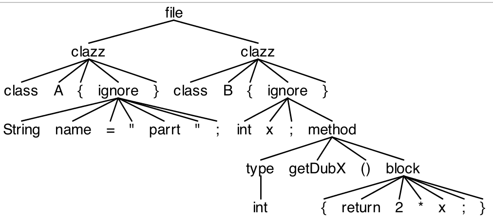
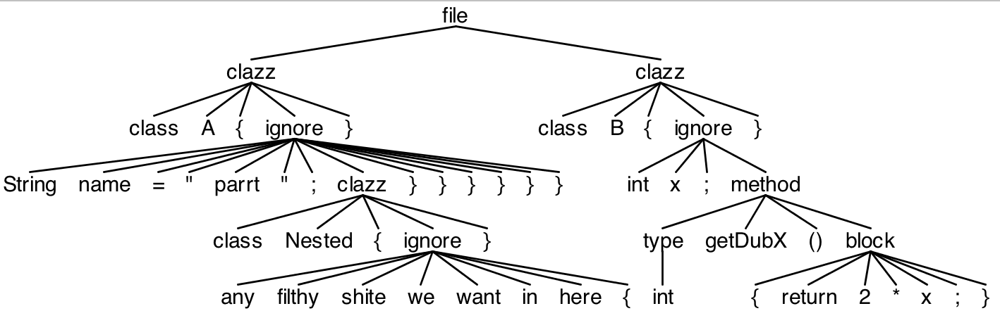

1. Wildcard Operator and Nongreedy Subrules
EBNF subrules like (...)?, (...)* and (...)+ are greedy—They consume as much input as possible, but sometimes that’s not what’s needed. Constructs like .* consume until the end of the input in the lexer and sometimes in the parser. We want that loop to be nongreedy so we need to use different syntax: .*? borrowed from regular expression notation. We can make any subrule that has a ?, *, or + suffix nongreedy by adding another ? suffix. Such nongreedy subrules are allowed in both the parser and the lexer, but they are used much more frequently in the lexer.
1.1. Nongreedy Lexer Subrules
Here’s the very common C-style comment lexer rule that consumes any characters until it sees the trailing */:
COMMENT : '/*' .*? '*/' -> skip ; // .*? matches anything until the first */
Here’s another example that matches strings that allow \" as an escaped quote character:
grammar Nongreedy;
s : STRING+ ;
STRING : '"' ( '\\"' | . )*? '"' ; // match "foo", "\"", "x\"\"y", ...
WS : [ \r\t\n]+ -> skip ;
$ antlr4 Nongreedy.g4
$ javac Nongreedy*.java
$ grun Nongreedy s -tokens
=> "quote:\""
=> EOF
<= [@0,0:9='"quote:\""',<1>,1:0]
[@1,11:10='<EOF>',<-1>,2:0]
Nongreedy subrules should be used sparingly because they complicate the recognition problem and sometimes make it tricky to decipher how the lexer will match text. Here is how the lexer chooses token rules:
- The primary goal is to match the lexer rule that recognizes the most input characters. ``` INT : [0-9]+ ; DOT : '.' ; // match period FLOAT : [0-9]+ '.' ; // match FLOAT upon '34.' not INT then DOT ```
- If more than one lexer rule matches the same input sequence, the priority goes to the rule occurring first in the grammar file. ``` DOC : '/**' .*? '*/' ; // both rules match /** foo */, resolve to DOC CMT : '/*' .*? '*/' ; ```
-
Nongreedy subrules match the fewest number of characters that still allows the surrounding lexical rule to match.
```
/** Match anything except \n inside of double angle brackets */
STRING : '<<' ~'\n'*?="" '="">>' ; // Input '<
>>>' matches STRING then END END : '>>' ; ``` -
After crossing through a nongreedy subrule within a lexical rule, all decision-making from then on is "first match wins."
For example, literal `ab` in rule right-hand side (grammar fragment) `.*? (’a’|’ab’)` is dead code and can never be matched. If the input is ab, the first alternative, ’a’, matches the first character and therefore succeeds. (’a’|’ab’) by itself on the right-hand side of a rule properly matches the second alternative for input ab. This quirk arises from a nongreedy design decision that’s too complicated to go into here.
To illustrate the different ways to use loops within lexer rules, consider the following grammar, which has three different action-like tokens (using different delimiters so that they all fit within one example grammar).
ACTION1 : '{' ( STRING | . )*? '}' ; // Allows {"foo}
ACTION2 : '[' ( STRING | ~'"' )*? ']' ; // Doesn't allow ["foo]; nongreedy *?
ACTION3 : '<' ( STRING | ~[">] )* '>' ; // Doesn't allow <"foo>; greedy *
STRING : '"' ( '\\"' | . )*? '"' ;
Rule ACTION1 allows unterminated strings, such as "foo, because input "foo matches to the wildcard part of the loop. It doesn’t have to go into rule STRING to match a quote. To fix that, rule ACTION2 uses ~’"’ to match any character but the quote. Expression ~’"’ is still ambiguous with the ’]’ that ends the rule, but the fact that the subrule is nongreedy means that the lexer will exit the loop upon a right square bracket. To avoid a nongreedy subrule, make the alternatives explicit. Expression ~[">] matches anything but the quote and right angle bracket. Here’s a sample run:
$ antlr4 Actions.g4
$ javac Actions*.java
$ grun Actions tokens -tokens
=> {"foo}
=> EOF
<= [@0,0:5='{"foo}',<1>,1:0]
[@1,7:6='<EOF>',<-1>,2:0]
=> $ grun Actions tokens -tokens
=> ["foo]
=> EOF
<= line 1:0 token recognition error at: '["foo]
'
[@0,7:6='<EOF>',<-1>,2:0]
=> $ grun Actions tokens -tokens
=> <"foo>
=> EOF
<= line 1:0 token recognition error at: '<"foo>
'
[@0,7:6='<EOF>',<-1>,2:0]
1.2. Nongreedy Parser Subrules
Nongreedy subrules and wildcard are also useful within parsers to do fuzzy parsing where the goal is to extract information from an input file without having to specify the full grammar. In contrast to nongreedy lexer decision-making, parsers always make globally correct decisions. A parser never makes a decision that will ultimately cause valid input to fail later on during the parse. Here is the central idea: Nongreedy parser subrules match the shortest sequence of tokens that preserves a successful parse for a valid input sentence.
For example, here are the key rules that demonstrate how to pull integer constants out of an arbitrary Java file:
grammar FuzzyJava;
/** Match anything in between constant rule matches */
file : .*? (constant .*?)+ ;
/** Faster alternate version (Gets an ANTLR tool warning about
* a subrule like .* in parser that you can ignore.)
*/
altfile : (constant | .)* ; // match a constant or any token, 0-or-more times
/** Match things like "public static final SIZE" followed by anything */
constant
: 'public' 'static' 'final' 'int' Identifier
{System.out.println("constant: "+$Identifier.text);}
;
Identifier : [a-zA-Z_$] [a-zA-Z_$0-9]* ; // simplified
The grammar contains a greatly simplified set of lexer rules from a real Java lexer; the whole file about 60 lines. The recognizer still needs to handle string and character constants as well as comments so it doesn’t get out of sync, trying to match a constant inside of the string for example. The only unusual lexer rule performs “match any character not matched by another lexer rule” functionality:
OTHER : . -> skip ;
This catchall lexer rule and the .*? subrule in the parser are the critical ingredients for fuzzy parsing.
Here’s a sample file that we can run into the fuzzy parser:
import java.util.*;
public class C {
public static final int A = 1;
public static final int B = 1;
public void foo() { }
public static final int C = 1;
}
And here’s the build and test sequence:
$ antlr4 FuzzyJava.g4
$ javac FuzzyJava*.java
$ grun FuzzyJava file C.java
constant: A
constant: B
constant: C
Notice that it totally ignores everything except for the public static final int declarations. This all happens with only two parser rules.
Now let's try matching some simple class defs w/o having to build parser rules for the junk inside. Here want to catch just A and B:
class A {
String name = "parrt";
}
class B {
int x;
int getDubX() {
return 2*x;
}
}
This grammar does it.
grammar Island;
file : clazz* ;
clazz : 'class' ID '{' ignore '}' ;
ignore : (method|.)*? ;
method : type ID '()' block ;
type : 'int' | 'void' ;
block : '{' (block | .)*? '}' ;
ID : [a-zA-Z] [a-zA-Z0-9]* ;
WS : [ \r\t\n]+ -> skip ;
ANY : . ;
You get:

Now let's try some nested classes
class A {
String name = "parrt";
class Nested {
any filthy shite we want in here { }}}}}}
}
}
class B {
int x;
int getDubX() {
return 2*x;
}
}
grammar Island;
file : clazz* ;
clazz : 'class' ID '{' ignore '}' ;
ignore : (method|clazz|.)*? ; // <- only change is to add clazz alt here
method : type ID '()' block ;
type : 'int' | 'void' ;
block : '{' (block | .)*? '}' ;
ID : [a-zA-Z] [a-zA-Z0-9]* ;
WS : [ \r\t\n]+ -> skip ;
ANY : . ;
You get:
